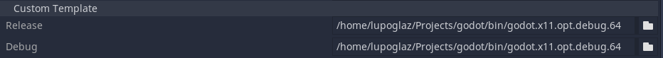

Basic tutorial
Figure1: Synchronization diagram between python script and the environment.

Synchronization in Python
Figure 1 shows the pattern of interaction between Python and Ultima Online client(C#) processes. First, python script samples an action from the model, meanwhile the C# process waits for the action to be passed. In this case ActSemaphore is blocked, while ObsSemaphore has green light.When the step function is called the action tensor is sent into the shared memory and ActSemaphore turns green. It signals to C# to start processing the action of an agent. Meanwhile the ObsSemaphore turns red, blocking python process while waiting for C# to send the observation.
Code 1: Introducing semaphores.
class UoService:
'''UoService class including gRPC client'''
def __init__(self, grpc_port, window_width, window_height):
self.grpc_port = grpc_port
self.window_width = window_width
self.window_height = window_height
self.stub = None
def _open_grpc(self):
# Open the gRPC channel using the port that is same of game client
channel = grpc.insecure_channel('localhost:' + str(self.grpc_port))
self.stub = UoService_pb2_grpc.UoServiceStub(channel)
def step(self, action):
# Send the action data to game client and receive the state of that action
action_type = action['action_type']
item_serial = action['item_serial']
mobile_serial = action['mobile_serial']
walk_direction = action['walk_direction']
index = action['index']
amount = action['amount']
run = action['run']
self.stub.WriteAct(UoService_pb2.Actions(actionType=action_type,
itemSerial=item_serial,
mobileSerial=mobile_serial,
walkDirection=walk_direction,
index=index,
amount=amount,
run=run))
self.stub.ActSemaphoreControl(UoService_pb2.SemaphoreAction(mode='post'))
self.stub.ObsSemaphoreControl(UoService_pb2.SemaphoreAction(mode='wait'))
response = self.stub.ReadObs(UoService_pb2.Config(name='step'))
First Step
The first task what the Python application need to know is probably walking. Let's see how to use the states and actions of the UoService to do that.The first information we need to know is position of player and target. Position of them can be extracted from the obs['player_mobile_data'].
For example, the player mobile data looks like a 120: ['masterkim', 'PlayerMobile', 778, 618, 0, 'None']. The key of data if serial number assigned to player mobile and each body column means [obj.name, obj.type, obj.screenX, obj.screenY, obj.distance, obj.title]. Monster data can be taken similar way as player data. Please the code for more detail.
How can we make up the arguments actionType, itemSerial, mobileSerial, walkDirection, index, amount, run of action for walk. First, we just know that the actionType should be 1. Next, the value for the walkDirection can be calculated from the x and y position of player and monster by using any planning algorithm. If you need to move fast based on the situation, set the run arguemnt as True. In the above video, the one skeleton is selected as tartget mobile and player move toward it. The full code is available from walk_to_monster.py file.
Code 2: Rule-based walking example code.
def main():
for step in tqdm(range(100000)):
## Obtain the serial of random mobile around the player
if len(obs["mobile_data"]) != 0 and target_mobile_serial == None:
## 16852: ['a zombie', 'Mobile', 646, 22, 16, ' a zombie ']
## Obtain the serial list of mobiles in current game screen
mobile_serial_list = list(obs["mobile_data"].keys())
## Obtain the serial list of mobiles in current game screen
target_mobile_serial = random.choice(mobile_serial_list)
## Declare the empty action
action = {}
## Declare the empty action
if step % 200 == 0:
if target_mobile_serial != None:
# 120: ['masterkim', 'PlayerMobile', 778, 618, 0, 'None']
player_mobile_serial = list(obs['player_mobile_data'].keys())[0]
player_mobile = obs['player_mobile_data'][player_mobile_serial]
## finally, we can acquire the target mobile data
if target_mobile_serial in obs["mobile_data"]:
target_mobile = obs["mobile_data"][target_mobile_serial]
else:
target_mobile_serial = None
continue
## Parse the x and y position of player
player_x = player_mobile[2]
player_y = player_mobile[3]
## Parse x and y position of target mobile
target_mobile_x = target_mobile[2]
target_mobile_y = target_mobile[3]
## Calculate the directons to move toward the target mobile
direction = utils.get_walk_direction_to_target([player_x, player_y],
[target_mobile_x, target_mobile_y])
# Walk action
action['action_type'] = 1
action['walk_direction'] = direction
action['run'] = True
obs = uo_service.step(action)
Pick
The training cycle for a reinforcement learning agent looks something like this (Code 2):we collect samples until we observed n_rollout states, these observations along with actions and rewards are collected in the batch.
Then the model does one gradient step, empties its batch and resumes simulation. During the simulation, all the actions are sampled from the model itself.
Code 2: Dummy code for training an agent.
## Event flags to test the scenario manually
pick_up_flag = True
drop_flag = False
## Event flags to test the scenario manually
for step in tqdm(range(100000)):
item_serial = 0
## Obtain the serial of Gold from players' backpack information
if len(obs["backpack_item_data"]) != 0:
item_serial, index = utils.get_serial_by_name(obs["backpack_item_data"], "Gold")
## Declare the empty action
action = {}
## Declare the empty action
if step % 200 == 0:
if pick_up_flag == True and item_serial != 0:
# Pick up the item
action['action_type'] = 3
action['item_serial'] = item_serial
action['amount'] = 100
pick_up_flag = False
drop_flag = True
print("action: ", action)
elif drop_flag == True:
# Drop the item
action['action_type'] = 5
print("action: ", action)
drop_flag = False
obs = uo_service.step(action)
Resetting the environment
When the episode of the simulation ends we want to reset the environment to the initial position without relaunching the engine process. To accomplish this feat we use additional action, that is 1 if the environment should be reset and 0 otherwise. However, the tricky part is resetting the positions and velocities of the objects in C#.In our case we have one physics object: RigidBody2D. The positions and velocities of the RigidBody2D node can be changed only in the _integrate_forces function of this node. Therefore we introduce the variable reset, which is true when we want to reinitialize this node and false otherwise. Additionally we create variables to store initial positions and velocities of this node.
The Code 5 shows the gist of this function. First we compute absolute initial Transform2D of the node and change the state accordingly.
Unfortunatelly, we have to compute the transforms of Anchor and PinJoint2D in the Environment script (Code 6). Probably, one can avoid this cumbersome procedure by reorganizing the tree or accessing the parent nodes from the RigidBody2D itself.
Code 5: Resetting the state of the RigidBody2D
func _integrate_forces(state):
if reset:
var T = Transform2D(0.0, init_anchor)
var Tt = Transform2D(0.0, -init_anchor)
var R = Transform2D(rng.randf_range(-PI, PI), Vector2(0,0))
var v = Transform2D(init_rotation, init_origin)
state.set_transform(T*R*Tt*state.transform)
state.set_angular_velocity(init_angular_velocity)
state.set_linear_velocity(init_linear_velicity)
reset = false
Code 6: Initial positions of the RigidBody2D from Environment node
func _ready():
var v = $Anchor/PinJoint2D/RigidBody2D.transform.get_origin()
var AnchorT = $Anchor.transform
var JointT = $Anchor/PinJoint2D.transform
$Anchor/PinJoint2D/RigidBody2D.init_anchor = AnchorT.xform(JointT.get_origin())
$Anchor/PinJoint2D/RigidBody2D.init_origin = AnchorT.xform(JointT.xform(v))
$Anchor/PinJoint2D/RigidBody2D.init_rotation = 0.0
$Anchor/PinJoint2D/RigidBody2D.init_angular_velocity = 0.0
$Anchor/PinJoint2D/RigidBody2D.init_linear_velicity = Vector2(0.0, 0.0)
Figure 4: Exporting C# project
Exporting the project
We tested this library using debug exporting templates. Just follow the standard C# export procedure and everything should just work.Code 7 shows how the environment is launched from the python class: we use subprocess package and pass the special handle to the environment so that it can access the shared memory allocated by python. We have to note, that it is important to redirect stdout and stderr streams to files instead of pipes. We found out that using pipes makes semaphores stuck in an impossible combination. To correctly close the environment process upon termination of the python script we use the atexit package to register the close function, that terminates the process. This approach works in case of termination of the python script due to errors as well as manual signals.
Code 7: Launching the exported environment
class DummyEnvLaunch(gym.Env):
def __init__(self, exec_path, env_path):
with open("stdout.txt","wb") as out, open("stderr.txt","wb") as err:
self.process = subprocess.Popen([exec_path, "--path",
os.path.abspath(env_path),
"--handle", self.handle], stdout=out, stderr=err)
atexit.register(self.close)
def close(self):
self.process.terminate()
Conclusion
In this tutorial we showed the first step to make your own environment in C# Engine and use it from python script. Right now the C# environment runs in the real time. In the next tutorial we will show how to speed it up. The fully functional code for this tutorial can be found here:Tutorials
The C# project is located in the directory InvPendulum and the python Gym class is in the file InvPendulum.py.